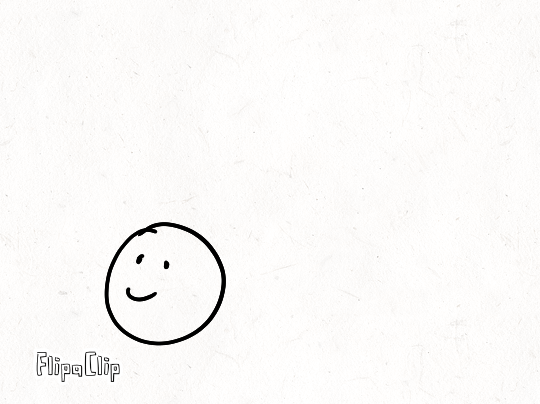
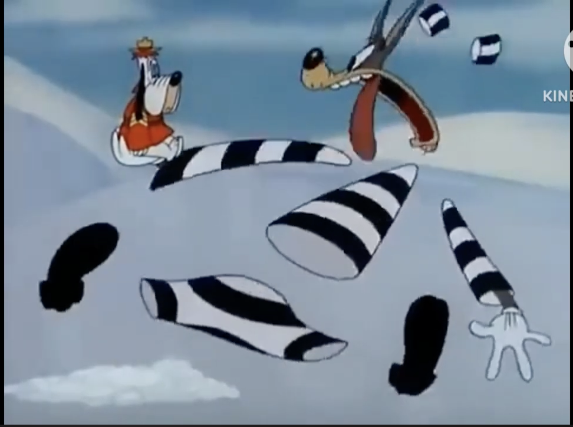

Exaggeration
This principle states that animation should have exaggeration, or in other words, a range of movement that isn’t possible in real life. It doesn’t need to feel too exaggerated but just the right amount. Now this might be tricky since exaggerating means steering away from realism, but it makes things more appealing and adds more emotion.

In this animation, the character pops into the scene, hits the head with a stick, and the head gets squished with its eyes popping out. The way how the character is floating while using the stick is intentional, and the head getting smashed is so ficticious like in cartoons. This is what many animations incorporate in some degree. Now, that doesn't mean the animation should steer away from its goal or message, but it can help reinforce it and make viewers engaged. Animation shouldn't try to replicate reality but go beyond it.

Click image to see example. During the 1940s, many animations applied exxageration to their films, like Tex Avery for example. Avery's work always liked to exagerate things and push the limits of what someone can do with animation.